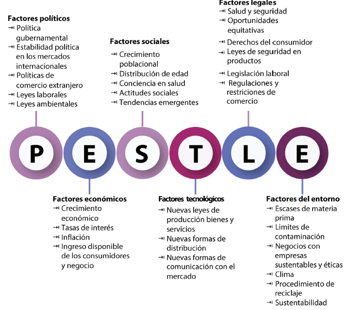

Presentar una visión holística para la gestión efectiva y eficiente de servicios mediante las cuatro dimensiones.
Asegurar que todos los elementos del Sistema de Valor del Servicio (SVS) estén equilibrados y coordinados.
Las cuatro dimensiones son áreas clave que se deben considerar para gestionar bien los servicios de TI (Tecnologías de la Información). Estas dimensiones ayudan a que los servicios funcionen correctamente y se adapten a los cambios sin problemas. Si alguna de estas dimensiones se descuida, es probable que los servicios no funcionen bien o que se generen problemas.
Estas cuatro dimensiones se representan de la siguiente manera:

Una organización debe tener claras las responsabilidades de cada persona. Esto se muestra usando:
Cuando una organización define bien qué debe hacer cada persona, se logran varias cosas:

- Permite a los jefes dirigir directamente el trabajo del equipo.
- Estos jefes pueden tomar decisiones sin pedir permiso.
- Son responsables de que se cumplan los objetivos.

- No dirigen directamente, pero apoyan y asesoran a los jefes y al personal.
- Su función es ayudar a que los demás hagan mejor su trabajo.

- Se da a una persona o departamento por un tiempo o tarea específica.
- Esta autoridad les permite tomar decisiones sobre temas concretos (como procesos, prácticas o políticas), incluso si afectan a otras áreas.
La comunicación es clave para que todos entiendan su papel y trabajen bien juntos. El modelo de comunicación es el proceso que la organización sigue para que la información fluya correctamente entre las personas.
Tener una estructura clara, en la que se definan quién manda a quién y qué rol tiene cada persona, no es suficiente para que una organización funcione de manera eficaz. Además de esto, es fundamental contar con una cultura organizacional fuerte y positiva que respalde los objetivos institucionales, facilite la colaboración entre los miembros del equipo y promueva comportamientos alineados con el éxito colectivo.
En este contexto, el papel de los líderes es clave. Ellos deben educar a sus equipos en los valores de la organización, respaldar esos valores con su propio ejemplo y fomentar un entorno en el que las personas se sientan motivadas a actuar de forma adecuada. Su liderazgo debe ser coherente, inspirador y orientado al fortalecimiento de una cultura organizacional sana.
Una estrategia efectiva para construir una cultura organizacional saludable es la aplicación de los principios guía de ITIL. Estos principios proporcionan una base sólida de valores y buenas prácticas que contribuyen a establecer un ambiente laboral coherente, colaborativo y orientado al logro de los objetivos comunes de la organización.

Las personas son un elemento fundamental dentro de cualquier organización. No solo importa lo que cada individuo sabe hacer por separado, sino también el conjunto de habilidades que aporta el equipo completo. Además, es esencial considerar los estilos de liderazgo y gestión presentes, así como la forma en que las personas se comunican y colaboran entre sí. Todos estos aspectos influyen directamente en la efectividad y el ambiente de trabajo.
Las personas deben actualizar sus habilidades y conocimientos constantemente.
Esto no solo beneficia a la organización, sino que también es útil para su propio desarrollo personal y profesional.
La motivación es un factor clave para el buen funcionamiento de una organización. Cuando las personas están motivadas, se desempeñan con mayor compromiso y efectividad. Por esta razón, los líderes deben adoptar estilos de gestión modernos, enfocados en mantener a su equipo motivado y alineado con los objetivos institucionales.
Hoy en día, no basta con que cada persona conozca solo su propio trabajo.
También es importante que entienda. Qué hacen los demás y cómo encajan todos los trabajos dentro de los procesos del negocio. Por eso, las organizaciones deben seguir mejorando las habilidades de comunicación y trabajo en equipo, para que haya transparencia entre las personas y los procesos.
Las organizaciones manejan muchos datos todos los días, y para controlarlos usan tecnología. Esta parte se enfoca en dos cosas principales: Información y la tecnología que la controla.
Una organización debe de contestar las siguientes preguntas.

Manejar bien la información es clave para dar valor a los clientes. Casi todos los servicios de tecnología que usan los negocios tienen como resultado el manejo de información.
También es importante cómo se comparte la información entre los distintos servicios de una organización. Para que todo funcione bien, la información debe ser. Disponible cuando se necesita, Confiable, Accesible y Precisa
Existen reglas y normas legales que deben cumplirse, como:
- Reglas de seguridad.
- Requisitos de privacidad según el país o el sector.
Estas regulaciones afectan cómo las organizaciones crean sus políticas y prácticas para manejar los datos correctamente.
Hoy en día, casi todos los servicios dependen de la tecnología de información (TI). Las organizaciones pueden decidir en qué momento y cómo usarla para sus productos o servicios.
- ¿La nueva tecnología funciona bien con la que ya tiene la empresa y sus clientes?
- ¿Cómo afectan las tecnologías emergentes al servicio o al trabajo de la empresa?
- ¿Existen políticas, normas o controles de seguridad que deban respetarse?
- ¿La tecnología seguirá siendo útil dentro de poco tiempo?
- ¿Conviene quedarse con tecnología antigua o arriesgarse con una nueva sin mucha prueba?
- ¿La tecnología va en la misma dirección que la estrategia de la empresa y sus clientes?
- ¿La nueva tecnología trae problemas o limitaciones que antes no existían?
Cada empresa es diferente. Algunas quieren usar lo más moderno (como inteligencia artificial) lo antes posible. Otras prefieren seguir trabajando con métodos más tradicionales y seguros.
Hay negocios (como gobierno, finanzas o salud) que manejan información muy sensible. Por eso, tienen más restricciones y no pueden usar cualquier tecnología, como el software de código abierto o servicios en la nube públicos, por temas de seguridad.
En esta dimension se trata de cómo una organización trabaja con otras empresas o entidades para lograr sus objetivos. No todo lo hace sola: necesita ayuda externa en varias etapas de su trabajo, como en la creación, entrega o mejora de sus servicios.
Las organizaciones pueden tener diferentes tipos de relaciones con otras, dependiendo del nivel de confianza, colaboración y formalidad que tengan. Algunas pueden ser muy estrictas, con contratos que indican claramente quién hace qué. Otras pueden ser más colaborativas, donde ambas partes comparten objetivos y riesgos, y trabajan como un equipo.
Estas relaciones no solo sirven para cumplir tareas, sino también para que la organización mejore su rendimiento, se adapte al cambio, e incluso innove más rápido.
Para que una organización logre relaciones efectivas y productivas con sus socios y proveedores, no basta con firmar contratos: es fundamental gestionar y coordinar activamente esas relaciones. Uno de los métodos clave para lograrlo es SIAM (Service Integration and Management).
Asegura la coordinación adecuada de las relaciones de servicios utilizando un integrador especialmente establecido.
Cuando una organización decide trabajar con proveedores, esto no solo es una cuestión operativa, sino que influye directamente en su estrategia general. Los factores clave que afectan esta decision son:
1. Enfoque estratégico: Algunas organizaciones prefieren enfocarse en lo que mejor saben hacer (sus competencias principales) y dejar otras tareas en manos de terceros (subcontratación). Otras, en cambio, optan por ser lo más autosuficientes posible y controlar todo internamente, incluso si eso requiere más esfuerzo o inversión.
2. Cultura corporativa: La cultura organizacional juega un papel importante. Si una empresa ha trabajado durante mucho tiempo de una manera específica, cambiar ese enfoque —por ejemplo, pasar de hacer todo internamente a depender de proveedores— puede ser difícil.
3. Escasez de recursos: A veces, las organizaciones simplemente no tienen los recursos o habilidades necesarias para hacer algo por sí mismas. En esos casos, recurrir a proveedores no es una opción estratégica, sino una necesidad.
4. Preocupaciones de costo: El costo es uno de los factores más importantes. Si contratar a un proveedor resulta más económico que hacerlo internamente, muchas veces esa será la decisión más lógica.
5. Experiencia especializada: Las organizaciones suelen preferir proveedores que ya tengan experiencia comprobada en el área que se necesita. En lugar de desarrollar habilidades nuevas desde cero, buscan a quienes ya saben hacer bien ese trabajo.
6. Restricciones externas: Factores como leyes, políticas gubernamentales, normas de la industria o incluso aspectos sociales y éticos también pueden limitar lo que una organización puede o no puede hacer con sus proveedores.
7. Patrones de demanda: La demanda de servicios cambia con el tiempo. A veces es muy alta, otras veces baja. En esos casos, los proveedores ayudan a las organizaciones a adaptarse rápidamente sin tener que contratar personal o recursos adicionales de forma permanente.
Esta dimensión se centra en la integración y coordinación de las actividades necesarias para crear valor mediante los productos y servicios. Para lograrlo, es fundamental tener una visión clara del modelo operativo que guía la organización.
Un flujo de valor es la serie de pasos que una organización sigue para crear y entregar un producto o servicio a sus consumidores. Estos flujos se construyen a partir de las actividades de la cadena de valor de ITIL y permiten transformar insumos en resultados valiosos.
Permiten evaluar el rendimiento general de la organización y detectar áreas de mejora.
Ayudan a estructurar el portafolio de servicios y entender con claridad: qué valor se ofrece y cómo se genera ese valor.

Facilitan el análisis de actividades que no agregan valor (desperdicios, cuellos de botella), permitiendo eliminarlas o transformarlas.
Dado que el entorno cambia constantemente, los flujos de valor deben ser revisados y mejorados de forma continua para alinearse con la estrategia organizacional.
Un proceso es un conjunto de actividades relacionadas que transforman entradas en salidas definidas, siguiendo una secuencia lógica y estructurada.
Están compuestos por:
- Procedimientos: describen qué se hace y quién lo hace.
- Instrucciones de trabajo: explican cómo se hace.
Los procesos son ecensiales para Cumplir con los objetivos de la organización, mejorar la productividad interna y externa y asegurar una entrega consistente y eficiente de servicios.
Los elementos de cadena de valor, flujos de valor, procesos, procedimientos e instrucciones de trabajo también se aplican a la creación, entrega y mejora de servicios.
Preguntas clave al diseñar o mejorar un servicio:
¿Cuál es el modelo de entrega genérico del servicio? (Es decir, ¿cómo opera el servicio?).
¿Qué flujos de valor están involucrados? (Identificar las rutas que transforman entradas en resultados acordados).
¿Quién o qué realiza las acciones de servicio necesarias? (Dependerá del tipo y arquitectura del servicio).
Los proveedores no operan de forma aislada: están influenciados por muchas fuerzas externas. El modelo PESTLE permite identificar y analizar esas fuerzas para anticiparse a riesgos o detectar oportunidades.
© 2025 UNIVERSIDAD NACIONAL AUTÓNOMA DE MÉXICO.